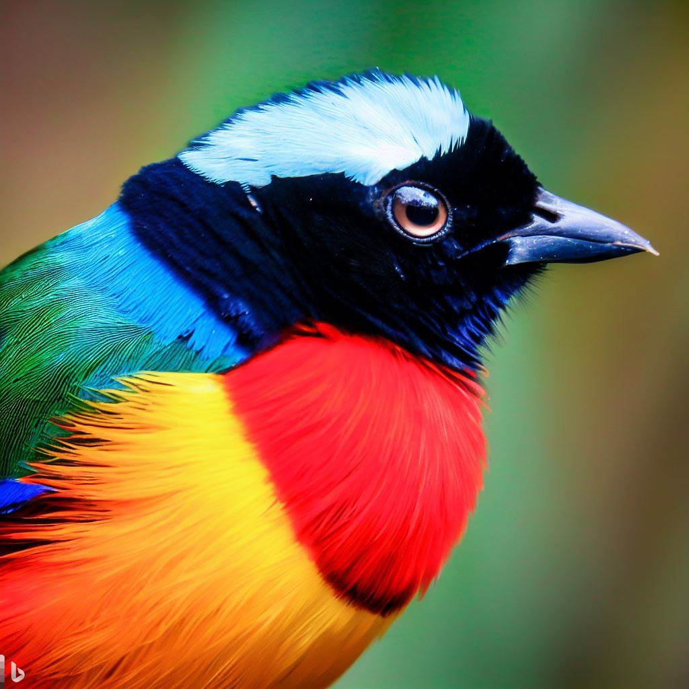
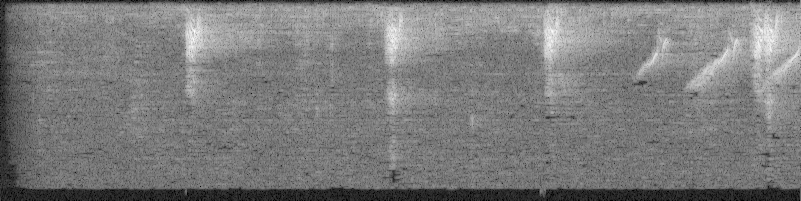

try: from fastkaggle import *
except ModuleNotFoundError:
! pip install -Uqq fastkaggle
from fastkaggle import *
iskaggle'Batch'Visualizing Sound
You can find this notebook on Kaggle here.
This notebook follows the fastai style conventions.

In this to-the-point notebook, I go over how one can create images of spectrograms from audio files using the PyTorch torchaudio module.
The notebook also goes over how I created the spectrogram images for the BirdCLEF 2023 competition, and how one can create and push a dataset right on Kaggle (useful if your local machine doesn’t have enough storage).
You can view the dataset that was generated from this notebook here.
try: from fastkaggle import *
except ModuleNotFoundError:
! pip install -Uqq fastkaggle
from fastkaggle import *
iskaggle'Batch'comp = 'birdclef-2023'
d_path = setup_comp(comp, install='nbdev')from fastai.imports import *
from fastai.vision.all import *Let’s see all the files and directories we have.
d_path.ls()(#5) [Path('../input/birdclef-2023/sample_submission.csv'),Path('../input/birdclef-2023/train_audio'),Path('../input/birdclef-2023/eBird_Taxonomy_v2021.csv'),Path('../input/birdclef-2023/train_metadata.csv'),Path('../input/birdclef-2023/test_soundscapes')]Let’s get the path to the audio files.
aud_files = d_path/'train_audio'And create a directory to store the spectrogram images.
mkdir('/kaggle/train_images', exist_ok=True); Path('/kaggle/train_images').exists()TrueIt’s always a good idea to try things out on a smaller scale; so let’s begin by converting only a single audio file.
Let’s get the first audio file.
aud_files.ls()(#264) [Path('../input/birdclef-2023/train_audio/yetgre1'),Path('../input/birdclef-2023/train_audio/moccha1'),Path('../input/birdclef-2023/train_audio/rostur1'),Path('../input/birdclef-2023/train_audio/walsta1'),Path('../input/birdclef-2023/train_audio/ratcis1'),Path('../input/birdclef-2023/train_audio/norfis1'),Path('../input/birdclef-2023/train_audio/macshr1'),Path('../input/birdclef-2023/train_audio/brrwhe3'),Path('../input/birdclef-2023/train_audio/crefra2'),Path('../input/birdclef-2023/train_audio/pabspa1')...]aud_files.ls()[0].ls()(#27) [Path('../input/birdclef-2023/train_audio/yetgre1/XC247367.ogg'),Path('../input/birdclef-2023/train_audio/yetgre1/XC574558.ogg'),Path('../input/birdclef-2023/train_audio/yetgre1/XC403259.ogg'),Path('../input/birdclef-2023/train_audio/yetgre1/XC498854.ogg'),Path('../input/birdclef-2023/train_audio/yetgre1/XC289493.ogg'),Path('../input/birdclef-2023/train_audio/yetgre1/XC716763.ogg'),Path('../input/birdclef-2023/train_audio/yetgre1/XC498853.ogg'),Path('../input/birdclef-2023/train_audio/yetgre1/XC338717.ogg'),Path('../input/birdclef-2023/train_audio/yetgre1/XC349660.ogg'),Path('../input/birdclef-2023/train_audio/yetgre1/XC403543.ogg')...]aud = aud_files.ls()[0].ls()[0]; audPath('../input/birdclef-2023/train_audio/yetgre1/XC247367.ogg')Now it’s time to load it in. What we get in return is the waveform and the sample rate.
import torchaudio
wvfrm, sr = torchaudio.load(aud); wvfrmtensor([[0.0000e+00, 0.0000e+00, 0.0000e+00, ..., 3.0518e-05, 0.0000e+00,
0.0000e+00]])This competition requires predictions to be submitted of all 5 second intervals in each audio clip. This means the audio files need to be clipped.
Below is an easy way this can be done. We clip the first 5 seconds of the audio file.
start_sec = 0
end_sec = 5
wvfrm = wvfrm[:, start_sec*sr:end_sec*sr]
wvfrm.shape[1] / sr5.0Sample rate is simply the number of frames recorded per second. The waveform that torchaudio returns is a tensor of frames. Therefore, we can easily select the desired range of frames by multiplying the sample rate with the desired start and end seconds.
Now let’s create the spectrogram.
import torchaudio.transforms as T
spec = T.Spectrogram()(wvfrm); spectensor([[[4.3970e-08, 8.2461e-09, 4.7306e-11, ..., 7.8266e-08,
1.7642e-08, 1.5016e-03],
[6.3310e-09, 6.5514e-10, 1.6958e-08, ..., 4.3492e-09,
3.6019e-08, 1.5231e-03],
[1.1548e-08, 1.7308e-08, 6.5956e-08, ..., 2.9340e-06,
1.2277e-06, 1.4124e-03],
...,
[2.4446e-07, 6.1277e-09, 1.4932e-09, ..., 1.4665e-08,
1.0110e-08, 1.8980e-05],
[3.1582e-07, 1.4777e-09, 1.2275e-08, ..., 1.3213e-08,
1.9035e-09, 2.0009e-05],
[3.1673e-07, 1.1897e-10, 2.7457e-09, ..., 1.0001e-08,
6.0452e-14, 1.9979e-05]]])Let’s scale it logarithmically. This allows for better viewing.
spec = T.AmplitudeToDB()(spec); spectensor([[[ -73.5684, -80.8375, -100.0000, ..., -71.0643, -77.5346,
-28.2346],
[ -81.9853, -91.8367, -77.7063, ..., -83.6159, -74.4347,
-28.1726],
[ -79.3751, -77.6177, -71.8074, ..., -55.3254, -59.1092,
-28.5005],
...,
[ -66.1180, -82.1270, -88.2588, ..., -78.3373, -79.9524,
-47.2170],
[ -65.0056, -88.3043, -79.1097, ..., -78.7899, -87.2045,
-46.9877],
[ -64.9931, -99.2458, -85.6135, ..., -79.9997, -100.0000,
-46.9943]]])The PyTorch tensor needs to be converted into a NumPy array so it can then further be converted to an image. I’m using the squeeze method to remove the uneeded axis of length 1, as seen below.
spec.shapetorch.Size([1, 201, 801])spec = spec.squeeze().numpy(); specarray([[ -73.56842 , -80.83749 , -100. , ..., -71.064285,
-77.53463 , -28.234562],
[ -81.98525 , -91.83666 , -77.706314, ..., -83.615875,
-74.43467 , -28.172626],
[ -79.37505 , -77.61765 , -71.80743 , ..., -55.32541 ,
-59.109177, -28.500452],
...,
[ -66.118 , -82.127014, -88.25883 , ..., -78.33732 ,
-79.95244 , -47.21705 ],
[ -65.00563 , -88.30426 , -79.10974 , ..., -78.78989 ,
-87.20445 , -46.987743],
[ -64.99306 , -99.24575 , -85.61355 , ..., -79.99969 ,
-100. , -46.994343]], dtype=float32)spec.shape(201, 801)The array now needs to be normalized so it contains integers between 0 and 255: the values needed for images.
spec = (spec - spec.min()) / (spec.max() - spec.min()) * 255; specarray([[ 53.000538 , 38.424625 , 0. , ..., 58.021824 ,
45.047504 , 143.90388 ],
[ 36.123127 , 16.369104 , 44.703243 , ..., 32.853405 ,
51.263535 , 144.02808 ],
[ 41.35709 , 44.881027 , 56.53168 , ..., 89.581375 ,
81.99417 , 143.37071 ],
...,
[ 67.94011 , 35.838867 , 23.543371 , ..., 43.437954 ,
40.199318 , 105.84024 ],
[ 70.17062 , 23.452267 , 41.889095 , ..., 42.530468 ,
25.6576 , 106.30005 ],
[ 70.19584 , 1.5124193, 28.847677 , ..., 40.104576 ,
0. , 106.28681 ]], dtype=float32)spec = spec.astype('uint8'); specarray([[ 53, 38, 0, ..., 58, 45, 143],
[ 36, 16, 44, ..., 32, 51, 144],
[ 41, 44, 56, ..., 89, 81, 143],
...,
[ 67, 35, 23, ..., 43, 40, 105],
[ 70, 23, 41, ..., 42, 25, 106],
[ 70, 1, 28, ..., 40, 0, 106]], dtype=uint8)Now we can finally convert the array to an image!
img = Image.fromarray(spec)
print(img.shape)
img(201, 801)
Cool, hey? We’ve just visualized audio!
To allow the images to easily be used by various models, I resized the spectrograms to be 512 by 512 pixels as shown below.
img_size = (512, 512)
img = img.resize(img_size)
print(img.shape); img(512, 512)
To save the image, we can simply use the save method.
img.save('img.png')Now that we have verified that our algorithm works fine, we can extend it to convert all audio files.
def create_imgs(duration, f):
for step in range(0, duration, 5):
wvfrm, sr = torchaudio.load(f)
wvfrm = cut_wvfrm(wvfrm, sr, step)
spec = create_spec(wvfrm)
img = spec2img(spec)
end_sec = step + 5
img.save(f'/kaggle/train_images/{bird.stem}/{f.stem}_{end_sec}.png')
def cut_wvfrm(wvfrm, sr, step):
start_sec, end_sec = step, step + 5
return wvfrm[:, start_sec * sr: end_sec * sr]
def create_spec(wvfrm):
spec = T.Spectrogram()(wvfrm)
return T.AmplitudeToDB()(spec)
def spec2img(spec, img_size=(512, 512)):
spec = np.real(spec.squeeze().numpy())
spec = ((spec - spec.min()) / (spec.max() - spec.min()) * 255).astype('uint8')
return Image.fromarray(spec).resize(img_size)if not iskaggle:
for bird in aud_files.ls().sorted():
mkdir(f'/kaggle/train_images/{bird.stem}', exist_ok=True)
for f in bird.ls().sorted():
info = torchaudio.info(f)
duration = info.num_frames / info.sample_rate
if duration >= 5:
create_imgs(round(duration/5)*5, f)
else: continueNote: Ignore the
if not iskagglestatement when replicating. I added it since I edited this notebook and needed to save changes without reproducing the entire dataset.
In the first for loop below, we loop through all the bird folders. For each folder, a folder with the same name is created in the directory where we want to store the images.
In the second for loop, we loop through all audio files within the folder and then convert them to spectrogram images through the create_images function I defined.
Some audio files in the training set are of different durations. Therefore, we obtain the duration of the audio file so it can correctly be clipped into 5 second intervals.
info = torchaudio.info(f)
duration = info.num_frames / info.sample_rate
if duration >= 5:
create_images(round(duration/5)*5, f)
else: continueAgain, since sample rate is the number of frames recorded per second, we can divide the total number of frames by the sample rate to obtain the duration in seconds of a clip.
duration = info.num_frames / info.sample_rate
Then we round the duration to the nearest 5 for easy clipping.
round(duration/5)*5
The images now created! The rest of this notebook covers how one can generate a dataset in a Kaggle Notebook and push it directly to Kaggle within it.
We need to configure the user keys so we can push to the correct account.
To do this, first obtain your Kaggle API key. Then, while in the notebook editor, click Add-ons -> Secrets -> Add a New Secret…
…input your key and give it a name…
…and click save. Then click the checkbox next to the secret to activate it for your notebook.
Repeat for your Kaggle username.
Now we can set the keys for the notebook as shown below (input the name of your key into get_secret).
import os
from kaggle_secrets import UserSecretsClientsecrets = UserSecretsClient()
os.environ['KAGGLE_USERNAME'] = secrets.get_secret('KAGGLE_USERNAME')
os.environ['KAGGLE_KEY'] = secrets.get_secret('KAGGLE_KEY')The fastkaggle library offers a convenient way to easily create and push a dataset to Kaggle.
doc(mk_dataset)mk_dataset(dataset_path, title, force=False, upload=True)
Creates minimal dataset metadata needed to push new dataset to kaggle
Note: Ignore the
if not iskagglestatement when replicating. I added it since I edited this notebook and needed to save changes without reproducing the entire dataset.
if not iskaggle:
mk_dataset('/kaggle/train_images', 'spectrograms-birdclef-2023', force=True, upload=True)And we can verify our dataset has been created by having a look at the generated metadata file.
if not iskaggle:
! cat /kaggle/train_images/dataset-metadata.jsonFrom here, we can go directly to the dataset page on Kaggle and fill out the rest of the details.
In summary, you saw how to: * Generate spectrogram images from audio files using torchaudio and fastai * How to cut audio tracks * And how to create and push a dataset directly on Kaggle
You can view the dataset that was generated from this notebook here.
If you have any comments, questions, suggestions, feedback, criticisms, or corrections, please do post them down in the comment section below!